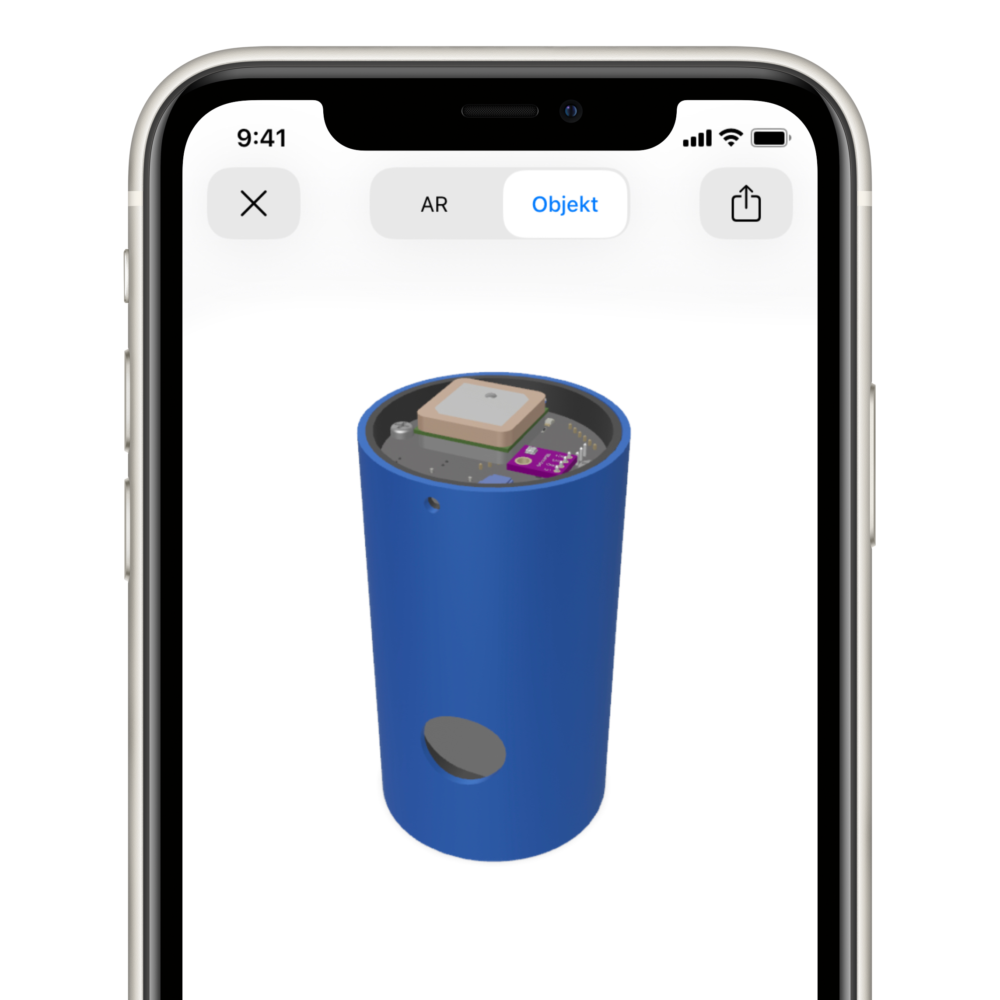

Soutěž CanSat
Soutěž
CanSat pořádá vzdělávací kancelář Evropské kosmické agentury
ESERO.
Cílem soutěže CanSat je sestrojit meteorologickou sondu, která se má vejít do nápojové plechovky. Sonda má být vybavena senzory, které musí měřit teplotu a tlak vzduchu. Tato data se také budou odesílat do pozemní stanice. Sonda je v rámci finále soutěže vynesena do výšky a v průběhu jejího pádu bude zaznamenávat a odesílat data. Následně sonda musí bezpečně dopadnout.
Monitorování pádu sondy
Snažíme se vytvořit postupy umožňující mapování sestupu naší sondy. Tento přístup není samoúčelný, neboť kromě naplnění vědecké části naší mise nám současně dává do ruky silnou zbraň v boji proti škůdcům, především pak strůjcům zla – špačkům. Vzhledem k tomu, že naši sondu vybavíme kamerami, budeme mít možnost efektivně monitorovat pohyb těchto tvorů. Součastně chceme celý pád sondy mapovat, a tak sestrojit účinný aparát pro získávání cenných dat o výskytu špačků. Tato data mohou být pak použita v efektivním zásahu proti nim.
Píseň kosmická II
Píseň kosmická II je sonda, kterou vytváříme. Sonda je pojmenovaná podle básnické sbírky Jana Nerudy. Skládá se z přístrojové jednotky a obalu. Píseň kosmickou II navrhujeme ve třech variantách: S, L, openCanSat. Ve variantách S a L sonda využívá
náš vlastní plošný spoj jako přístrojovou jednotku, zatímco poslední verze používá CanSat sadu
openCanSat.
Náš plošný spoj je osazen čipem, který využívá architekturu ARM Cortex-M4. Pro měření teploty, tlaku a vlhkosti vzduchu jsme zvolili senzor
BME280. Ovšem přístrojová jednotka netvoří jediný náklad našeho CanSatu. Dále jsou na palubě dvě kamery, které by měli při pádu sondy sledovat okolí. Kamery budou uloženy pod přístrojovou jednotkou a směřovat budou do stran.
Osazený plošný spoj je umístěn do pevného pouzdra vytisknutého na 3D tiskárně z materiálu
CPE, který máme od společnosti Fillamentum. Přes pouzdro je natažen plášť, ten je vytisknutý z
flexibilního filamentu. Tak nabízí dodatečnou ochranu nákladu při dopadu. Tento plášť také přesahuje přes spodní okraj pevného obalu, tak při dopadu funguje také jako amortizační systém.
PKII v rozšířené realitě!
(pouze pro zařízení s iOS/iPadOS)

Členové týmu
Tým GJN Aerospace tvoří šest studentů pražského Gymnázia Jana Nerudy, které se nachází na Malé Straně. V ročníku 2019 soutěže CanSat jsme se
umístili na 6. místě. Práce na projektu probíhají primárně na schůzkách v přízemí budovy naší školy. Celý náš postup na projektu sdílíme
na sociálních sítích, tak můžete sledovat aktuální informace o projektu.


.jpg){kind=link}